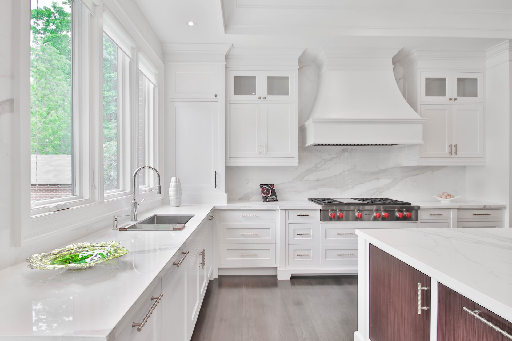

KÖKSRENOVERING I
STOCKHOLM

Behöver du köksrenovering i Stockholm? Köket är ofta hemmets hjärta och det är i detta utrymme man ofta spenderar tid tillsammans med familj och vänner. Kanske det är dags att tänka på att renovera köket? Att renovera kök i Stockholm är ett lite större projekt, men med oss kan du få hela jobbet gjort. Kök renovering pris kan skilja sig åt beroende på vad du vill att din renovering av kök ska omfatta. Kontakta oss idag, så kan vi komma överens om hur din köksrenovering ska se ut. Köket är en av de viktigaste platsen i hemmet. Det är ett av de rummen där vi tillbringar större delen av tiden hemma. Speciellt nu när de moderna öppna köken med mycket arbetsytor gör köken till en plats för både matlagning och umgänge. En köksrenovering är alltid ett stort projekt som tar ganska mycket tid och utrymme i anspråk. Vi gör alltid vårt bästa för att tiden då renoveringen pågår ska bli så bekväm som möjligt för dig.
Vi kan även hjälpa till med design och idéer så att ni får erat dröm kök. Vi har kompetensen och kvalitetstänket som gör att vi kan ordna renoveringen både effektivt och utan slarv. I vår arbetsstyrka finns enbart yrkesskickliga medarbetare som har kvalitet och kundnöjdhet som första prioritet. Kostnaden för att renovera ett nyckelfärdigt kök i Stockholm beror på vilka material arbetet utförs, antalet utföringssteg, rumets yta. För väggbeklädnad använder du tapeter, målning, plattläggning. I rum i ett litet område rekommenderas det inte att limma tapeter även i matintagzonen – hög luftfuktighet påverkar dem negativt. Det bästa alternativet är att måla. Med olika färger, speciella målningstekniker, är det möjligt att skapa en unik design av rummet. Idag är väggarna i köket inte helkaklade, som de en gång gjorde. Färgen ska kombineras med de installerade möblerna. Dessutom kan de båda harmonisera med varandra och kontrast. Taket är dekorerat med färg, plastpaneler, spänningssystem. Varje art har sina egna detaljer, men tillåter att sköta och utseendet till detta designelement.
Det är ingen hemlighet att färg betyder en viktig roll i våra liv. Valet av färgpalett är nära besläktat med vår psykologiska uppfattning. Till exempel lugnar grön färg, blått hänvisar till kalla toner, det bär svalhet, och blått ger hopp, skarlakansröd och röd locka och upphetsa. När du väljer en färg är det också nödvändigt att beakta belysningen i rummet. Om fönstren i ditt kök är belägna i norr eller skuggade av höga träd är det tydligt att det inte finns tillräckligt med ljus. I det här fallet rekommenderar vi dig att välja nyanser av gyllene, beige, ljusrosa färger. Visuellt förstorande av rummet hjälper till att reflektera glansiga ytor. Detta skapar en atmosfär av en klar solig morgon. Omvänt, om köket har starkt solljus hela dagen, bör fördelen ges att lugna kalla nyanser av blått eller grönt. Förberedelserna för en kökreparation i Stockholm börjar med demontering av allt som behöver bytas ut. Och allt måste ändras: från kaminen till kakel på väggen och ledningar. Efter att du börjat rensa rummet för skräp innan du börjar arbetet.
Att utarbeta ett kökdesignprojekt och budgetera är en mycket viktig del av framgången med arbetet. Detta gör att du kan beräkna och skapa en ekonomisk ram exakt. Försummelse av denna artikel äventyrar allt planerat arbete. Särskilt om det är en budgetkökreparation. Avvecklingsarbete kan göras av dig själv eller använda professionella tjänster. Det beror på dina ambitioner och ekonomiska förmågor. Rören ska placeras så nära väggen som möjligt. Gjutjärnsbatterier bör bytas ut mot mer moderna batterier. Olika material används för rörledningen: koppar, metall-plast, polypropen. Alla har naturligtvis sina för- och nackdelar. De mest hållbara är kopparrör. De har en hel lista med fördelar och har bara en nackdel – det höga priset. De återstående två alternativen är också acceptabla, men vad gäller pris / kvalitetsförhållande vinner polypropen fortfarande. Metallplast är inte dåligt, men svårt att installera.
Att byta ledningar, det viktigaste är att beräkna i förväg hur många elektriska apparater som kommer att anslutas i köket. Förutom huvudinvigningen är närvaron av strålkastare önskvärd som ytterligare belysning av arbetsområdet. Huven är naturligtvis placerad ovanför spis eller spis. Denna massiva design, för att bevara estetiken, är önskvärd att gömma sig i ett väggskåp eller i hängande tak. När du väljer en huva är viktiga faktorer deras form och kraft. Huvorna är kuplade, upphängda eller infällbara och väljs för den prioriterade inredningen. Huvans kraft ska motsvara köket. Formen beror direkt på den valda inredningen i köket. Svårigheterna som måste beaktas vid planering av köksrenovering: – i köket hög luftfuktighet. När du väljer en beläggning för väggar, tak och golv, bör detta inte glömmas; – vid matlagning blir luften tung från förångningen av fett och andra produkter; – effekten av varm luft och organiska rester har en gynnsam effekt på reproduktionen av mikroorganismer.
Baserat på detta bör beläggningsmaterialen vara så stabila som möjligt, lätta att ta hand om och inte förlora sitt utseende under påverkan av temperaturförändringar. Samtidigt bör de passa ihop och ha ett estetiskt utseende. När allt kommer omkring är vårt mål inte bara praktisk utan också vacker reparation av köket i Stockholm. Vid planering av reparationen av köket i lägenheten i Stockholm kommer att behöva investera mycket tid. Men det är ganska motiverade kostnader, eftersom du i slutändan inte bara får en plats att laga mat, utan också ett mysigt hörn där hela familjen samlas.
Vänligen fyll i formuläret korrekt